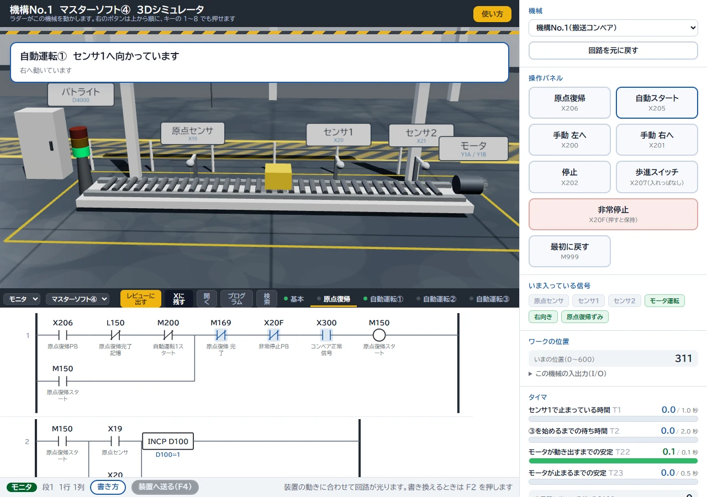

チャットで相談
図面やプログラムの画面を添えて 文章で気軽に相談できます。

よくある状態
支援 1
設備の動きとプログラムを結びつけて学び 原因の切り分けまでできる担当者を育てます
受講する方の経験と 貴社の設備に合わせて順番と範囲を調整します


支援 2
設計の見直し 不具合の切り分け 立上げの進め方まで 制御の相談先を社外に持てます
図面やプログラムの画面を添えて 文章で気軽に相談できます。
画面を共有しながら その場で一緒に確認します。


支援 3
ベテランの教え方を 教材・課題・テストにして社内に残します
自社のPLC講座の実績と試算です

進め方
扱っている設備と困りごとを送る
範囲と目標を整理
支援の内容と進め方 お見積り
内容を確認してから着手
画面を共有しながら 作った物を一緒に確かめます。進め方は最初の打合せで御社に合わせて決めます。
ヒアリングのあとにお見積りします。範囲・進め方・期間によって変わるため 決まった料金表は置いていません。
図面やプログラムをお預かりする範囲を 着手前に一緒に決めます。NDAも取り交わします。